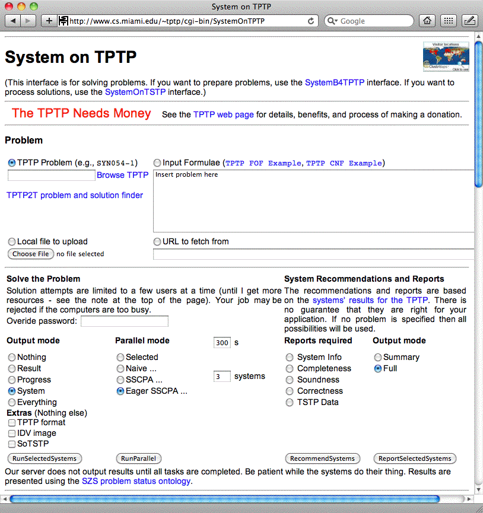
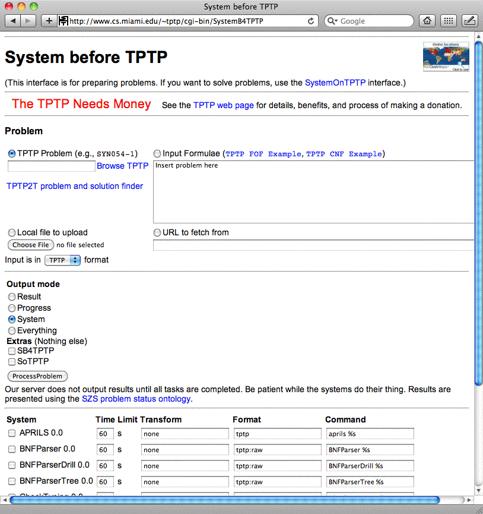
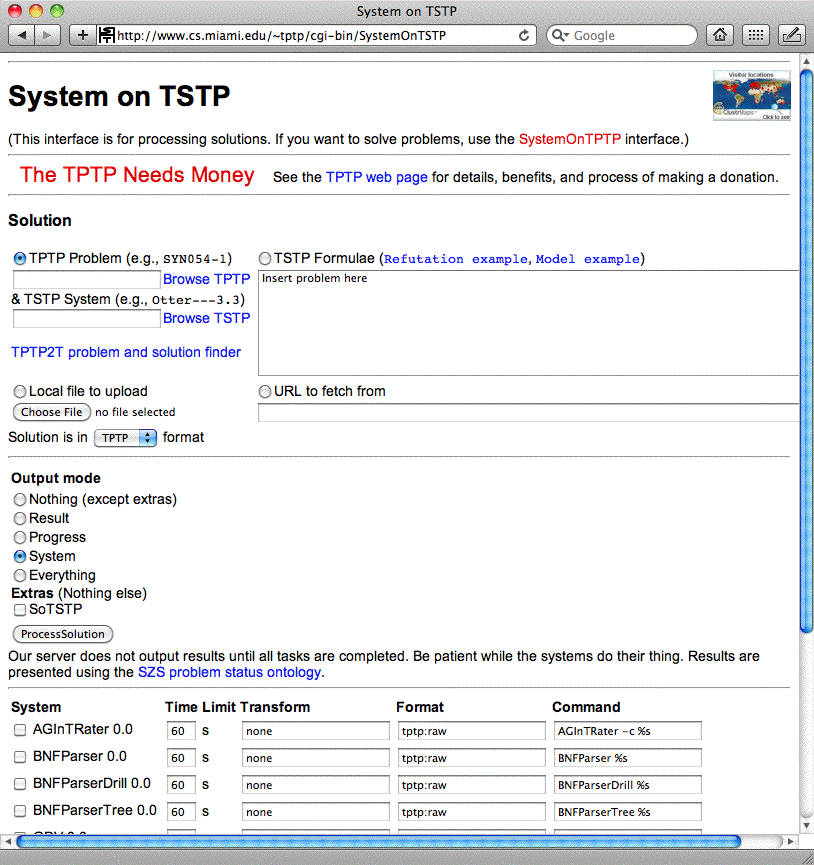

SystemOnTPTP - ATP in your Web Browser

SystemOnTPTP

SystemB4TPTP

- Problem syntax conversion
- Parsers and pretty printing (BNF-based and
tptp2X and tptp4X)
- THF-TFF-FOF-CNF conversion (Why3, Isabelle, Monotonox, ECNF, VCNF)
- Type checking (Syntactic and Twelf-based)
- Axiom selection (ESelect, VSelect)
- TPI interpreter (TPII)
- Available
online at www.tptp.org/cgi-bin/SystemB4TPTP
SystemOnTSTP

- Solution syntax conversion
- Parsers and pretty printing (BNF-based and
tptp4X)
- GDV - Semantic Derivation Verification
- Answer extraction and proof summarization
- AGInTRater
- Interestingness rating
- IDV
- Interactive Viewing of Derivations
- Available
online at www.tptp.org/cgi-bin/SystemOnTSTP